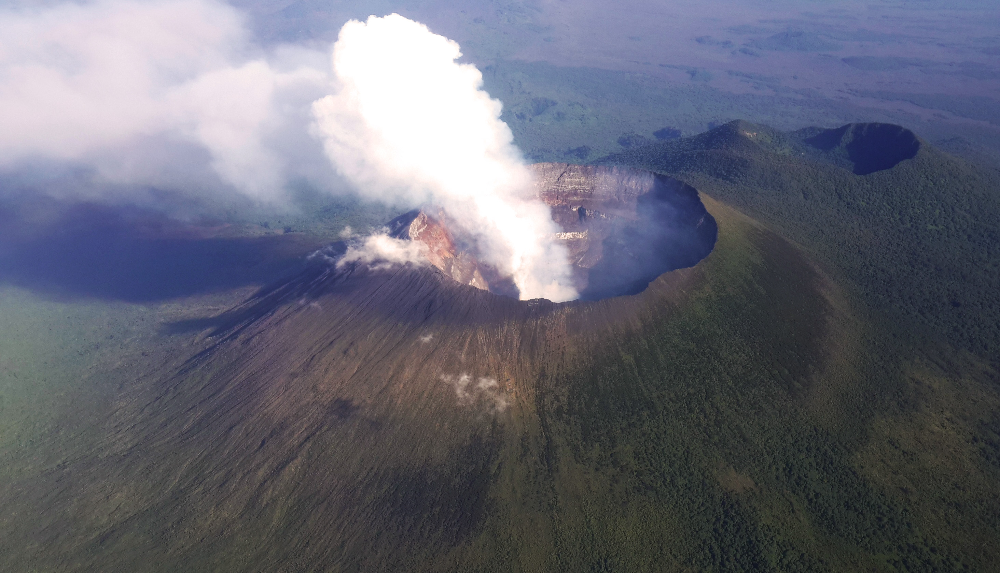

Mount Nyiragongo

Description
Nyiragongo is a stratovolcano, which means it is shaped like a cone and has a crater at the top. It is 11,385 feet (3,470 meters) high. Its main crater is 1.3 miles (2 kilometers) wide and 820 feet (250 meters) deep. The crater holds the world's most active and largest lava lake.
History
Nyiragongo is a stratovolcano, which means it is shaped like a cone and has a crater at the top. It is 11,385 feet (3,470 meters) high. Its main crater is 1.3 miles (2 kilometers) wide and 820 feet (250 meters) deep. The crater holds the world's most active and largest lava lake.The level has gradually risen since then.Nyiragongo and nearby Nyamuragira are together responsible for 40% of Africa's historical volcanic eruptions.
Not much is known about how long the volcano has been erupting, but it has erupted at least 34 times since 1882, including many periods where activity was continuous for years at a time, often in the form of a churning lava lake in the crater. The existence of the lava lake had been suspected for some time but was not scientifically confirmed until 1948.At that time, it was measured at nearly 120,000 square metres (1.3×106 sq ft).Subsequent expeditions showed that the lake fluctuated in size, depth, and temperature over time.
The lava lake activity is ongoing.As of 2020, the lake is mostly confined within a broad, steep-sided cinder cone (roughly 18 m (60 ft) high by 180 m (600 ft) wide) on the crater floor.